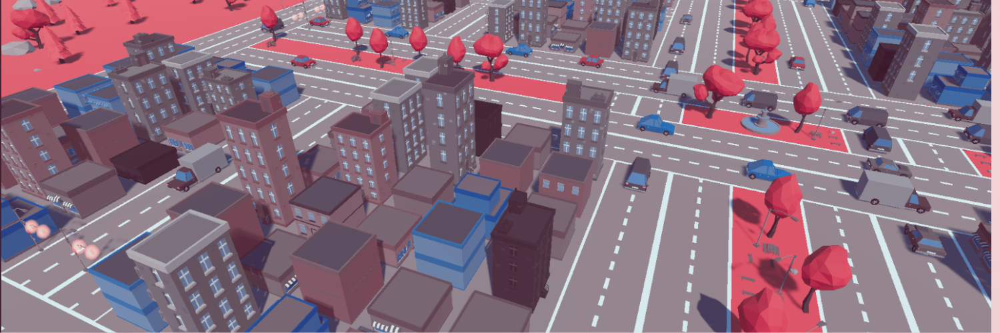

Simulación Movilidad Urbana
This is a multi-agent urban city simulation designed to analyze and understand the dynamics of urban mobility. By utilizing python´s Mesa library, Flask Framework and unity to model the simulation, this project aims to explore and identify factors contributing to traffic congestion in urban areas. Through the simulation, various aspects of transportation systems, such as road networks and traffic flows, are examined to gain insights into the causes of congestion.
In this project, I played a role in the development and implementation of the simulation's agent classes and establishing the seamless connection between Flask and Unity. I was one of the responsibles for creating and refining the behavior of the simulated agents, ensuring their realistic interactions within the urban environment.